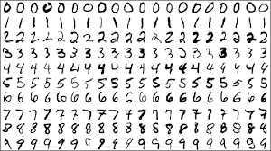

ARTIFICAL INTELLIGENCE
SOME NOTES FROM THE SIDELINES
HISTORY
# ALAN TURING - 1928 - 1954 <img class="img-25" src="images/330px-Alan_Turing_Aged_16.jpg"></img> https://en.wikipedia.org/wiki/Alan_Turing
# TURING MACHINE </img> https://en.wikipedia.org/wiki/Turing_machine
# TURING TEST Can you tell if you're talking to a machine or a human? https://en.wikipedia.org/wiki/Turing_test
# DARTMOUTH WORKSHOP - 1956 </img>
# DARTMOUTH WORKSHOP We propose that a 2-month, 10-man study of artificial intelligence be carried out during the summer of 1956 at Dartmouth College in Hanover, New Hampshire. The study is to proceed on the basis of the conjecture that every aspect of learning or any other feature of intelligence can in principle be so precisely described that a machine can be made to simulate it. An attempt will be made to find how to make machines use language, form abstractions and concepts, solve kinds of problems now reserved for humans, and improve themselves. We think that a significant advance can be made in one or more of these problems if a carefully selected group of scientists work on it together for a summer. https://en.m.wikipedia.org/wiki/Dartmouth_workshop
# ELIZA - 1966 <img class="img-50" src="images/ELIZA_conversation.jpg"> https://en.wikipedia.org/wiki/ELIZA
# SHAKEY - 1970's https://en.wikipedia.org/wiki/Shakey_the_robot
# TECHNOLOGIES Expert Systems Neural Nets Reinforcement Learning Planners Optimizers
# CYC Douglas Lenat 1984
# NEURAL NETWORKS
# NEURAL NETWORKS
# REINFORCEMENT LEARNING <img class="img-33" src="images/Reinforcement_learning_diagram.svg.png">
# AI WINTER <img class="img-50" src="images/ai1.jpg"> https://en.wikipedia.org/wiki/AI_winter
PRESENT
# MACHINE LEARNING The new thing is an old thing. Same algorithms as the 80's, attached to contemporary hardware.
# MACHINE LEARNING Engineers are making > US$500k Startups are taken less seriously if they don't do Machine Learning Companies are building their success on ML (eg. Google, Facebook)
# DEEP LEARNING
# MNIST DEMO 
# REINFORCEMENT LEARNING
<!-- Evolution --> <iframe width="1120" height="630" src="https://www.youtube.com/embed/GqVuV7Khiag" frameborder="0" allow="accelerometer; autoplay; encrypted-media; gyroscope; picture-in-picture" allowfullscreen></iframe>
# OpenAI https://openai.com/blog/emergent-tool-use/
<!-- Open AI --> <iframe width="1120" height="630" src="https://www.youtube.com/embed/Lu56xVlZ40M" frameborder="0" allow="accelerometer; autoplay; encrypted-media; gyroscope; picture-in-picture" allowfullscreen></iframe>
<!-- Latest Boston Robotics --> <iframe width="1120" height="630" src="https://www.youtube.com/embed/7Q3YW-3KCzU" frameborder="0" allow="accelerometer; autoplay; encrypted-media; gyroscope; picture-in-picture" allowfullscreen></iframe>
# WHAT STILL CAN'T BE DONE? Human-like agility / dexterity Common sense Symbolic Thought Full Natural Conversation Driving (controversially!)
FUTURE
# 2001: A SPACE ODYSSEY - 1968 https://en.wikipedia.org/wiki/2001:_A_Space_Odyssey_(film)
# 2001: A SPACE ODYSSEY
# ARTIFICAL GENERAL INTELLIGENCE Artificial general intelligence (AGI) is the intelligence of a machine that can understand or learn any intellectual task that a human being can. https://en.wikipedia.org/wiki/Artificial_general_intelligence
# PEOPLE WERE SKEPTICAL ## The Chinese Room - 1980 (Skeptics - John Searle, Hubert Drefus) https://en.wikipedia.org/wiki/Chinese_room
# NO ONE* IS SKEPTICAL NOW Podcast - "GIGAOM - Voices In AI" Host - Byron Reese. Hundreds of guests - philosophers, AI engineers, etc. Host:"Do you think AGI is possible?" Guest:"Yes" Host:Grrr
# TECHNOLOGICAL SINGULARITY https://en.wikipedia.org/wiki/Technological_singularity
# KURZWEIL CURVE
# "A HANDFUL OF NEW INVENTIONS" Before the Wright Brothers flew their plane, human flight was impossible AGI could be 500 years away, or it could already be here in a lab somewhere
# SUPERINTELLIGENCE The book that freaked-out Bill Gates and Elon Musk
# SUPERINTELLIGENCE ## PATHWAYS **AI** **Brain emulation** **Biological cognition** **Brain-computer interfaces** **Networks**
# SUPERINTELLIGENCE ## FORMS **Speed** - just like a human only faster **Collective** - like multiple humans working together **Quality** - as fast as humans but qualitatively smarter **Reach** - able to get to other forms
# SUPERINTELLIGENCE ## Digital Hardware Advantages Speed of computational elements Internal communication Speed Number of computational elements Storage Capacity Reliability / Lifespan / Sensors
# SUPERINTELLIGENCE ## Digital Software Advantages Editability Duplicability Goal Coordination Memory Sharing New modules / modalities / algorithms
# SUPERINTELLIGENCE ## Kinetics Fast - minutes hours or days Medium - months or years Slow - decades or centuries
# RIGHTS Do these entities have any? Do we create a new rights-deserving entity every time we run their program? "Soul of Martha, A Beast"
<!-- The Good Place --> <iframe width="1120" height="630" src="https://www.youtube.com/embed/6vo4Fdf7E0w" frameborder="0" allow="accelerometer; autoplay; encrypted-media; gyroscope; picture-in-picture" allowfullscreen></iframe>
# WARFARE <img class="img-50" src="images/terminator.png"> Some say this is the most proximate risk (eg. Stuart Russell)
<!-- Slaughter Bots --> <iframe width="1120" height="630" src="https://www.youtube.com/embed/9CO6M2HsoIA" frameborder="0" allow="accelerometer; autoplay; encrypted-media; gyroscope; picture-in-picture" allowfullscreen></iframe>
# PAPER CLIP MAXIMIZER "Suppose we have an AI whose only goal is to make as many paper clips as possible. The AI will realize quickly that it would be much better if there were no humans because humans might decide to switch it off. Because if humans do so, there would be fewer paper clips. Also, human bodies contain a lot of atoms that could be made into paper clips. The future that the AI would be trying to gear towards would be one in which there were a lot of paper clips but no humans." - Nick Bostrom <img class="img-25" src="images/11-30Paperclip-4.jpg">
# FRIENDLY AI https://en.wikipedia.org/wiki/Friendly_artificial_intelligence
# THE URN OF INVENTIONS Our civilization is constantly reaching into the **Urn of Inventions** to solve problems White, Gray, Black Balls - Microwave-nukes?
RESOURCES
# YOU TUBE 3Blue1Brown - https://www.youtube.com/channel/UCYO_jab_esuFRV4b17AJtAw Two Minute Papers - https://www.youtube.com/user/keeroyz
# PODCASTS **Making Sense** - Sam Harris **Artificial Intelligence** - with Lex Fridman **After On** - Rob Reid **Philosophy Bites**
# BOOKS **SuperIntelligence** - Nick Bostrom **The Singularity is Near** - Ray Kurzweil **The Philosophical Baby** - Alison Gopnik **The Book of Why** - Judea Pearle
# MOVIES **2001 : A Space Odyssey** **Her** **Ex Machina** **Transcendance** **Blade Runner**
END
<!-- Bosstown Dynamics --> <iframe width="1120" height="630" src="https://www.youtube.com/embed/y3RIHnK0_NE" frameborder="0" allow="accelerometer; autoplay; encrypted-media; gyroscope; picture-in-picture" allowfullscreen></iframe>